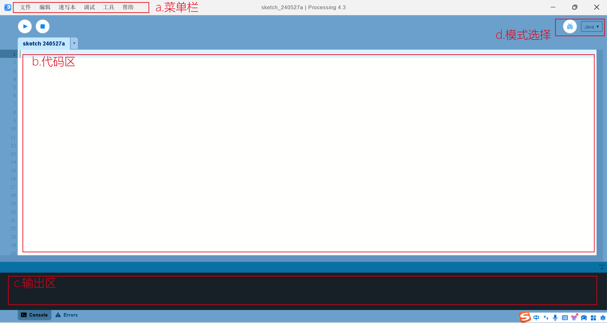
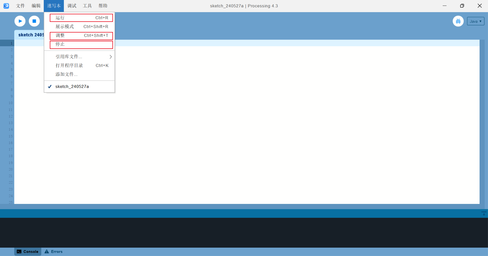
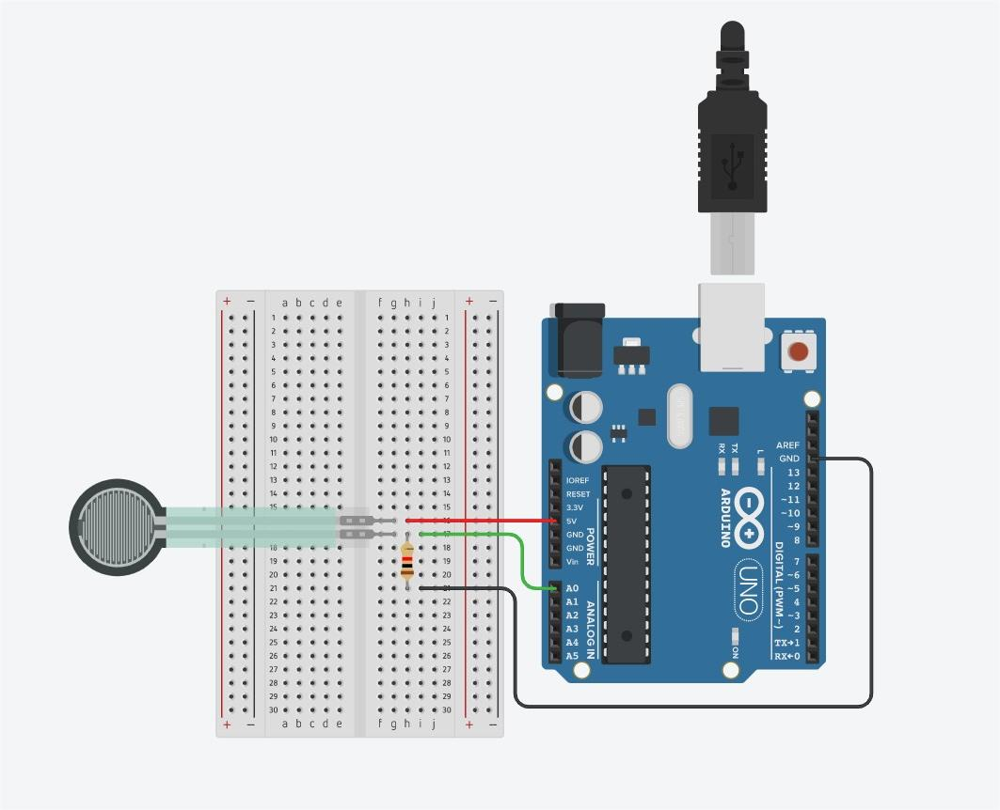
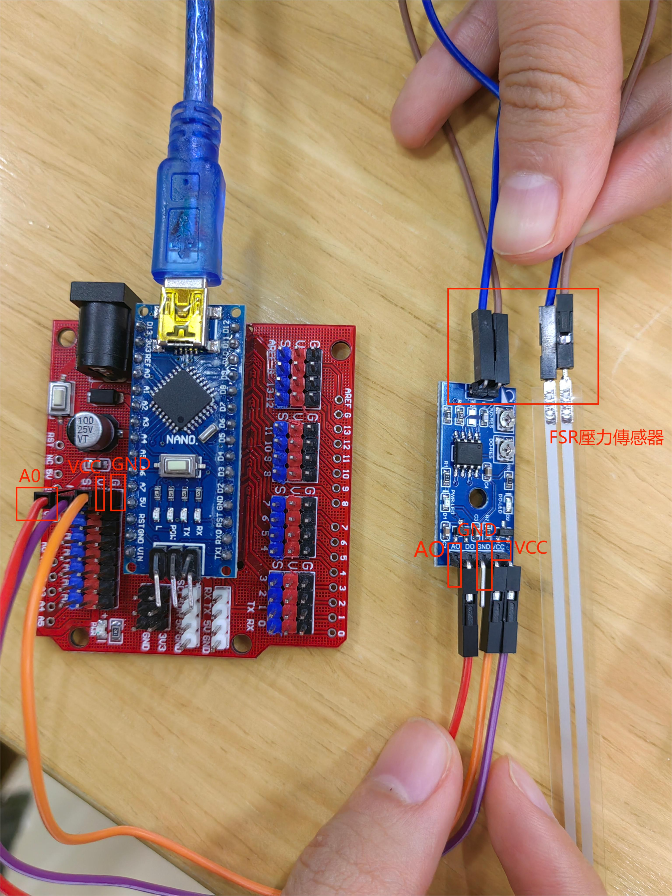
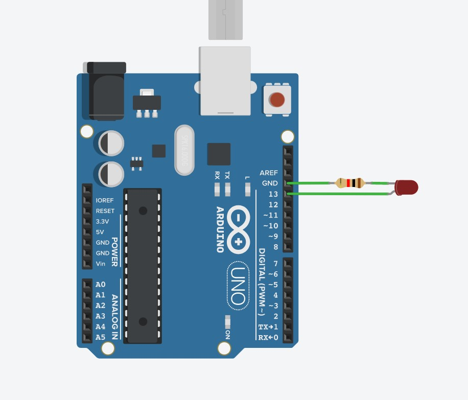
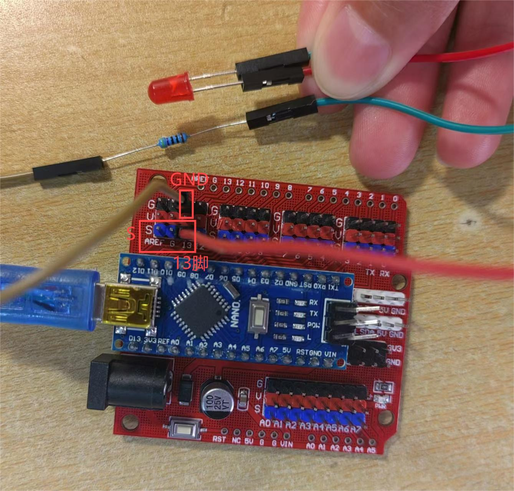

01 Learn the processing
Official website of Processing(processing.org)Processing is an easy to learn and powerful software that is especially suitable for designers. It provides simple and intuitive
syntax and rich graphics processing capabilities, allowing users to easily create interactive works and motion graphics.
peculiarity:
1. Ease of use: The concise syntax makes it easy to use
2. Community support: There is a large and active community where users can share and communicate with each other, and also provides
opportunities for collaboration
3. Creative: suitable for creating interactive devices, data visualization and other visual art works
1-1 The function of each part of the code box
a. Menu bar: located at the top of the window, it contains commonly used function buttons, such as documents, sketches, etc
b. Code area: This is the main area of coding where users can write and edit Processing code.
c. Output area: located below or next to the editing area, it is used to display the output information of the program, such
as the result of printed statements, error information and debugging information.
d. Mode selection: Processing provides two modes: Java mode and JavaScript mode. Java pattern is used for traditional desktop
application development, while JavaScript pattern is used for Web development. Users can switch modes in the toolbar or menu.
a. Start: Start running the program
b. Stop: Stop running the program
A. New: Clicking will create a new window with a new, empty editing area where you can start writing new code.
b. Sample programs: Usually contains a number of preset sample programs that demonstrate various programming concepts and
techniques. Users can select these sample programs to learn and understand how Processing works.
c. Preferences: Preferences allow users to configure various parameters of the Processing IDE according to their preferences
and needs.
You can change the editor's fonts, languages, color themes, code indent Settings, and more.
The Run button is used to execute the currently selected sketch, the Adjust button allows the user to modify the Settings or
parameters of the sketch, and the Stop button is used to stop the running sketch. These buttons are usually located in the toolbar of the
sketchbook application.
1-2 Processing coding method
1. Data Types
Processing provides several built-in data types, including integers (int) floating point numbers (float) Booleans (boolean)
characters (char) and strings (string).
2. Data Variables
Variables are used to store data values, they must be announced before use, and can be local variables (visible only inside
the function) or global variables (visible throughout the program)
3. Operators
These include arithmetic operators (e.g. +, -, *, /), comparison operators (e.g. = =, >, <), and logical operators (e.g.!). Etc.
4. input function input()
Used to get a line of text that the user entered from the console. The function pauses program execution until the user enters
some text and presses the enter key.
5. Output function print()
Used to print any type of data. It can print strings, integers, floating-point numbers, etc., and can print multiple items consecutively.
6. Loop statements :for,while,do while
Loop to execute blocks of code repeatedly.
7. Conditional statements :if, else if, else
Statements can be combined to execute code based on multiple conditions.
1-3 Similar software introduction
Touch Designer
Official website of Touch Designer(derivative.ca)Touch Designer is a powerful real-time interactive visual programming platform that allows artists and designers to create complex
multimedia content through intuitive node manipulation, which is widely used in stage performances, installation art, visual effects
and more.
The power of Touch Designer lies in its flexibility and extensibility, allowing users to customize various visual effects and interactions
according to their needs. Whether you are an artist, designer or engineer, TouchDesigner is an ideal choice for the fusion of creativity
and technology.
02 Processing Interactive project
2-1 Project introduction
The processing interaction is to draw an ellipse at the current position of the mouse, and its size and color are dynamically
adjusted according to the position of the mouse
2-2 Code
//5.27 by Zhao Yuer
void setup () { //This is a special function that performs an initialization operation once the program starts running
size (600,800) ; //The two values entered represent pixels and are commands to change the size of the window
background (255, 255, 255) ; //Sets the background color of the drawing window. This code sets the background color to plain white
}
void draw(){ //epresents the main drawing loop, where the program continues to execute the code in the draw() function until the program
is stopped or terminated
frameRate (8) ； //Set the frame rate to 8 frames per second
fill (random (200, 255), random (200, 255), random (200, 255), 100) ; //The fill() function is used to set the fill color for the drawing,
where the red, green, and blue components are between 200 and 255, and
the transparency is set to 100
float r=map (mouseX, 0, 100, 30, 70)； //Map the position of the mouse in the horizontal direction from a range of 0 to 100 to a range of
30 to 70, and save the result in the variable r
noStroke () ;ellipse (mouseX, mouseY, r, r) ；//Draw an ellipse without a border at the current position of the mouse, the size of which
dynamically adjusts as the mouse position changes to a range of 100 mapped to a range of
30 to 70, and save the result in the variable r
}
2-3 Effect display

03 processing & arduino
3-1 Using Procssing to control Arduino
Project introduction
Continuous item:Pressure controls the size of the circle
Detail introduction:In processing, a circle with black background and white lines is drawn first, and connected to the FSR pressure
sensor through the ardunio program, and pressure is applied to compress the circle.
Code
Arduino code
//2024.5.25 by Han Chenyue
int val=0;//An integer variable val, initialized to 0. This variable is used to store the analog value read from analog input pin A0.
void setup(){
Serial.begin(9600);//Initializes serial communication, setting the communication baud rate to 9600 baud per second.
}
void loop(){//The function is used to send data over a serial port.
val=analogRead(A0);
Serial.write(val/4);
delay(100);//Pause program execution for 100 milliseconds (0.1 seconds). This is done to control the rate at which the loop executes and to avoid sending data too quickly.
}
Processing code
//2024.5.25 by Han Chenyue
import processing.serial.*;
Serial port;
float val;
void setup(){
size(600,600);
String myPort = Serial.list()[0];//Gets the first serial port in the list of available serial ports on your computer.
port=new Serial(this,myPort,9600);//Initializes serial communication, connecting Processing applications to the selected serial port at a baud rate of 9600 baud per second
background(255);
}
void draw(){
background(0);
if(port.available()>0){//Check whether data is available on the serial port
val = port. read();//If the serial port has data available, use the port.read() function to read a byte and store it in the val variable.
strokeWeight(5);
noFill();
stroke(255);
val=int(map(val,0,255,0,400));//Use the map() function to map the value of val from the range 0 to 255 to the range 0 to 400, and convert the result to an integer.
This is to convert the received data into a suitable range of angles in order to draw semi-arcs.
println(val);
}
arc(300,300,400,val,0,PI);//Draw a semi-arc, located in the center of the drawing window (300, 300), with a radius of 400 pixels, starting at an Angle of 0 and
ending at an Angle of PI (180 degrees), the size of which is controlled by the val variable.
}
Circuit diagram
Physical connection mode
Effect display

3-2 Using Arduino to control Processing
Project introduction
continuous item:The mouse in the rectangle position to change the led light light.
Detail introduction:Draw a rectangle on the Processing interface. When you click inside the rectangle with the mouse, the LED light on
the Arduino board lights up; when you click outside the rectangle, the LED light on the Arduino board lights off.
Code
Arduino code
//2024.5.25 by Han Chenyue
int c =0;
void setup()//Functions are part of an Arduino program and are executed only once when the program starts running.
{
Serial.begin(9600); //Initializes serial communication and sets the communication rate to 9600 bits per second
pinMode(13,OUTPUT); //Set digital pin 13 to output mode to control the devices connected to that pin.
digitalWrite(13,LOW);//Setting the status of digital pin 13 to low (0V) will ensure that the LED is off at the beginning of the program.
}
void loop()
{
if(Serial.available())//Check whether data is available in the serial buffer. If there is data available in the serial buffer, proceed with the following code.
{
c=Serial.read();//Read a byte of data from the serial port and store it in variable c.
if(c==97) //Check that the byte read is equal to the ASCII 97 character, that is, the letter 'a'.If yes, execute
digitalWrite(13,HIGH); //Set the status of digital pin 13 to high (5V), which will light up the LED connected to that pin.
else
if(c==98) //Check that the byte read is equal to the ASCII character of 98, that is, the letter 'b'.If yes, execute
digitalWrite(13,LOW);//Set the status of digital pin 13 to low (0V), which will turn off the LED connected to that pin.
}
}
Processing code
//2024.5.25 by Han Chenyue
import processing.serial.*;//This line of code imports Processing's serial port library to communicate with the serial port.
Serial port;//This line of code declares a global Serial object called port, which handles communication with the serial port
void setup()
{
port =new Serial(this,"COM4",9600);//Initializes serial communication, specifying the serial port number to connect to ("COM4"), and the baud rate of communication (9600).
size(400,400);
}
void draw()
{
background(125);
fill(255);
rect(100,100,50,50);
}
//Check that the mouse click position is within the specified rectangle.
If the click position is inside a rectangle, send the character "a" to the serial port to indicate that the LED should be ON and print "LED turn ON!" .
If the click position is not inside the rectangle, send the character "b" to the serial port to indicate that the LED should be OFF and print "LED turn OFF!" .
void mouseClicked()
{
if((mouseX>=100)&(mouseX<；=150)&(mouseY>=100&mouseY<；=150))
{
println("LED turn ON!");
port.write("a");
}
else
{
println("LED trun OFF!");
port.write("b");
}
}
Circuit diagram
Physical connection mode
Effect display